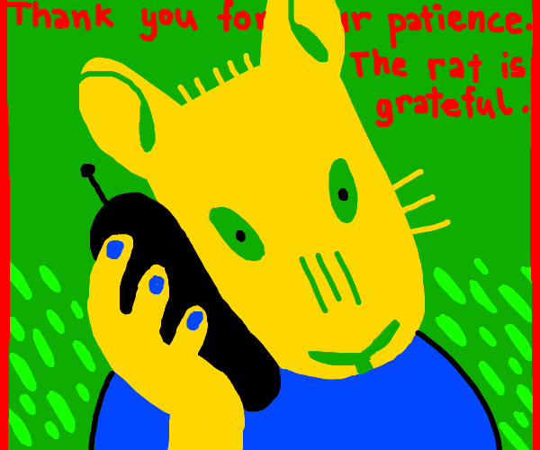
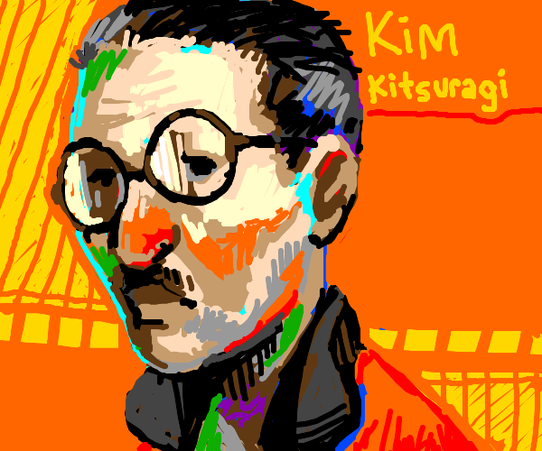
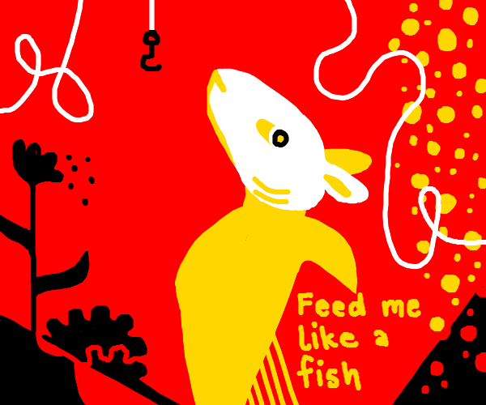
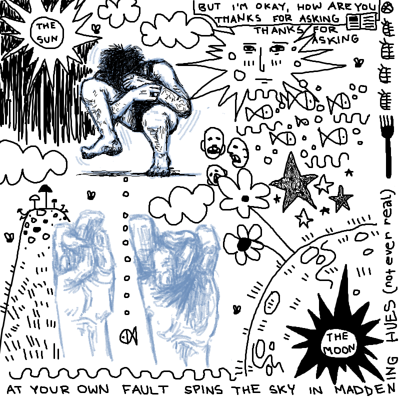
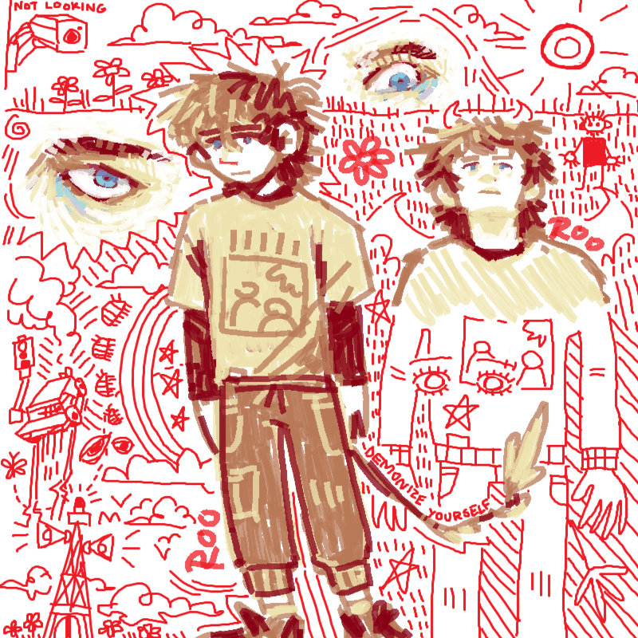
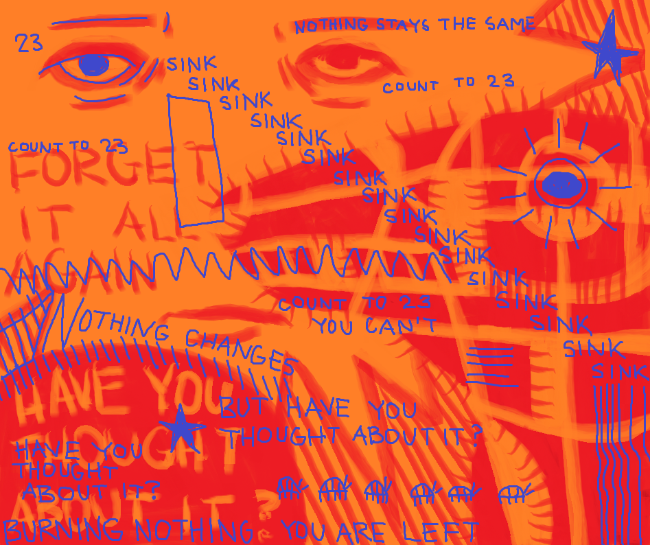
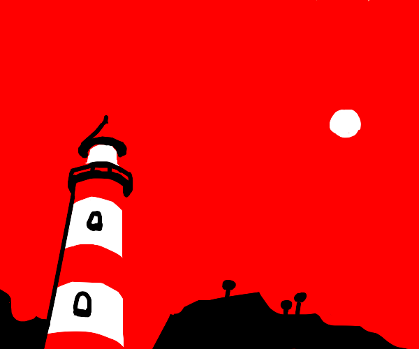
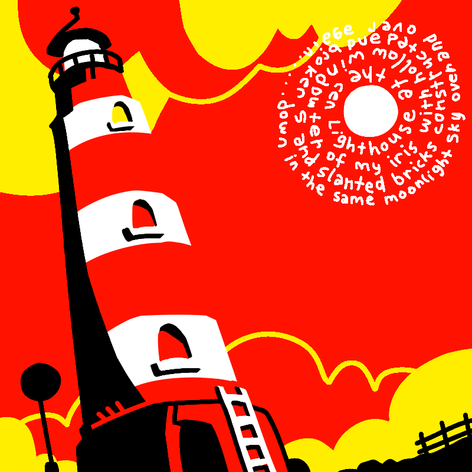

The position in which thought finds itself after 1945 forces Hannah Arendt to
leave the realm of philosophy and turn to literature. Only there does she encounter
the question preoccupying her. In her “Preface: The Gap Between Past and
Future,” which precedes the essays of her 1961 volume Between Past and Future,
the moment in which she moves into a reading of Kafka is rooted in an experience
that refers to the relation between thought and reality: “reality has become
opaque for the light of thought.”1 For Arendt, the present Now in which she writes
and thinks is marked by the fact that thinking and reality are no longer linked
with one another. Thought does not withstand the shock of reality. Therefore,
thinking - “no longer bound to incident as the circle remains bound to its focus” -
risks “either […] becom[ing] altogether meaningless” or relying on truths that
have been passed down, “old verities which have lost all concrete relevance.”2
Through the quote from René Char's Feuillets à Hypnos [Leaves of Hypnos] that
introduces her essay - “Notre héritage n'est précédé d'aucun testament - 'our
inheritance was left to us by no testament'”3 - Arendt's reflections on the divergence
of thinking and reality are temporally and logically connected back to the
time of the resistance and to the realization of the abyss into which the grounds
of reality, der Boden der Tatsachen, have changed, as she writes in an earlier text.
So it is the wish to describe this particular situation in exact terms that leads
Arendt to Kafka. She reads Kafka's text - an account from the series of the “He”
pieces from 19204 - as a “parable.” In this term, she follows the word's etymological
traces of meaning (para, next to, and ballein, to throw) and describes the
text as a kind of missile of rays, which sheds light on the hidden inner structure
of occurrences. It is precisely in this image that she sees the singularity of Kafka's
literature. These rays of light, “thrown alongside and around the incident […]
do not illuminate its outward appearance but possess the power of X rays to lay
bare its inner structure that, in our case, consists of the hidden processes of the
mind.”5
Kafka's text constructs a thought-image in which a man, “he,” is caught
between two antagonistic forces: “The scene is a battleground on which the
forces of the past and the future clash with each other; between them we find
the man whom Kafka calls 'he,'' who, if he wants to stand his ground at all, must
give battle to both forces.”6 Arendt emphasizes that the time currents of the past
and the future collide as antagonistic forces only because “he” is already there:
“the fact that there is a fight at all seems due to the presence of the man.”7 The
term “presence” here emerges in its spatial connotation. Arendt's commentary
moves back and forth between “the human being” and the “he,” the pronoun
that occurs in Kafka's text; this oscillation thereby signals how the contradiction
between the universal and the singular in her reading is at once opened up and
settled. “Seen from the viewpoint of man,” she notes, time is not a continuum;
rather, it is precisely “at the point where 'he' stands,”8 broken or cracked open. In
the course of Arendt's reading, her formulation of “the point where 'he' stands” -
in which the place available to “him” has shrunk to an extreme minimum, to a
point on a line - translates itself into the “standpoint,” addressing the capacity
of judgment: “'his' standpoint is not the present as we usually understand it but
rather a gap in time which 'his' constant fighting, 'his' making a stand against
past and future keeps in existence.”9 Thus, Arendt's interpretation introduces the
figure of speech of the “ground under one's feet” [Boden unter den Füßen] and
links it to a reflection on temporality by reading it as an “insertion in time”: “Only
because man is inserted into time and only to the extent that he stands his ground
does the flow of indifferent time break up into tenses.”10 For Arendt, it is precisely
this insertion, this point of rupture in the indifferent flow of time, that marks the
beginning of a beginning, as she writes with recourse to Augustinus.
Kafka's “he,” in its third-person singular form, appears as a pronoun that
designates a person who can jump out of the line of battle only in dreams. In this
sense, one can claim that the form of grammatical speech in Kafka's text enacts
the tension, or perhaps even the conflict, between the singular and the universal:
the “he” in Kafka at once opens and limits generalization; it does not mediate
between the singular and the universal. Arendt, however, wishes to develop a
generally valid metaphor for the activity of thinking via her insertion of and commentary
on Kafka's text. She searches for a metaphor that allows her to think the
activity of thinking in such a way that it is bound to and remains anchored in the
present - “rooted in the present.”11 Thus, she is concerned with a thinking that
remains embedded in “human time”12 and does not surrender to “the old dream
which Western metaphysics has dreamed from Parmenides to Hegel of a timeless,
spaceless, suprasensuous realm as the proper region of thought.”13 Arendt brings
the jump of which Kafka's “he” “at least” dreams, namely, that “some time in an
unguarded moment - and this would require a night darker than any night has
ever been yet - he will jump out of the fighting line,”14 into accord with the jump
that thought makes from human time into the timeless sphere of metaphysics, as
passed on in the Western history of philosophy.
For Arendt, Kafka's “he” has barely enough room to stand, because Kafka
clings to the traditional image that presents time as a straight line.15 She replaces
the figure of the line with a parallelogram. According to her argument, this form
comes into being due to the mere fact that the “he” is imprisoned in the flow of
time: “The insertion of man, as he breaks up the continuum, cannot but cause
the forces to deflect, however lightly, from their original direction.”16 This tiny
deflection of powers allows something spatial, an angle, to appear, and so the
geometric metaphor changes: the line becomes a plane. Or in Arendt's words: the
interval, the gap where “he” stands, becomes something like a parallelogram of
forces. Yet what is decisive for the genesis of this metaphor of the activity of thinking,
which Arendt gleans from her reading of Kafka, is that now the point where
the forces collide becomes the origin of a third figure: namely, a diagonal line.
Exactly inverting the two forces that meet in the point, this diagonal force would
be limited from its point of origin but infinite with regard to its end. The movement
of thinking expressed in this image would thus have a determined direction
through past and future, yet at the same time it would not be completable. Arendt
describes the figure constituted in this way as a “small non-time-space in the very
heart of time,”17 which cannot be passed on but must be constantly reinvented.
According to this thought-image, then, it is the activity of thinking itself that
forges a narrow path of non-time in the time-space of the mortal human.
Thus, we see that the attempt to open the battlefield outlined by Kafka characterizes
the direction that Arendt's reading of Kafka takes. However, citing an
insertion from Kafka's text, Arendt emphasizes that “this is only theoretically
so”18 - so […] aber nur teoretisch ist.19 According to Arendt, it is more likely that
“he” - unable to find the diagonal - perishes from fatigue, “aware only of the
existence of this gap in time which, as long as he lives, is the ground on which
he must stand, though it seems to be a battlefield and not a home.”20 Moreover,
Arendt clarifies that her aim is to confront “the contemporary conditions
of thought” with the help of a metaphor. She emphasizes that her claims apply
only to mental phenomena, in other words, to thought in time, and cannot be
transposed to historical or biographical time. But fragments from the ruinous
landscape of biographical and historical time can be touched and sheltered by
thought and memory and saved into the (previously noted) “small non-timespace
in the very heart of time.”
About me
I'm a 17 year old from Latvia(🇱🇻), born on the 23rd of May in 2008.
I like watching movies, TV shows and drawing every now and then.
I love music and currently my most played artists include Radiohead, Duster and all of Liam Mccay's
projects.
My hobbies are writing and reading as well as drawing. I haven't managed to read many books as of late,
but one that most stuck with me was "White Oleander" by Janet Fitch.
Creative yet linear.
My current favorite movie is
Manic (2001)
and my favorite show is Arcane.
I go by any pronouns.
Images
Here are some of the drawings I've done:










Links
I'm not active on social media, but I do have some accounts you can check out.
- Discord: 23isopods
- tumblr: trafficlight23
- Letterboxd: amis23
- Spotify: 23232323
- Sviesta Ciba(🇱🇻): vitola23
Pronoun page: @stroopwafel23
My friend Carl: Dingo's Humble Abode
References

White Oleander (Baltie Oleandri)
"Māte iekoda lūpā, it kā nopietni apsvērtu viņas vārdus, taču visu laiku bikstīja manas delnas centru
ar nagu, līdz es nodomāju, ka tas izurbsies man caur plaukstu."
"Ar mani viņa nesarunājās. Viņa sēdēja uz jumta un sarunājās ar mēnesi."
"Bet cik ilgi cilvēks var peldēt, skatīdamies uz tukšu apvārsni? Cik ilgi tu peldi, līdz pieliec
visam punktu?"
"Sāpes, kuras mēs nespētu pārciest, nogalinātu mūs uzreiz."
"Tikai tāpēc vien, ka dzejnieks ir kaut ko pateicis, tas vēl nekļūst par patiesību, lai gan skan tik
labi."
https://www.goodreads.com/book/show/12881287-baltie-oleandri